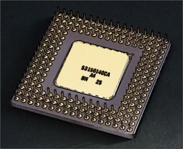
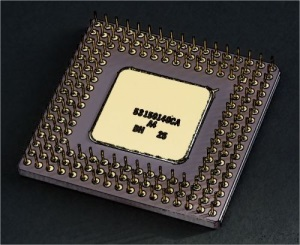
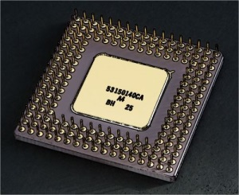
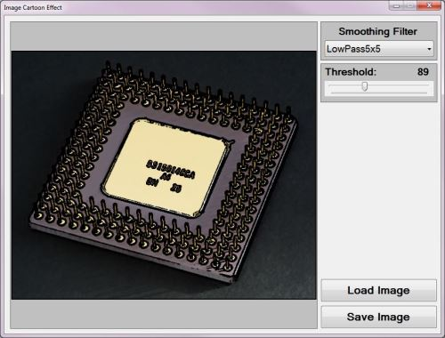
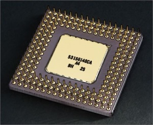

Image Cartoon Effect
Introduction
In this article we explore the tasks related to creating a Cartoon Effect from images which reflect real world non-animated scenarios. When applying a Cartoon Effect it becomes possible with relative ease to create images appearing to have originated from a drawing/animation.
Cartoon version of Steve Ballmer: Low Pass 3×3, Threshold 65.
Building the Sample
There are no special requirements or instructions for building the sample source code.
CPU: Gaussian 7×7, Threshold 84

Using the Sample Application
A Sample Application has been included as part of the sample source code accompanying this article. The Sample Application is a Windows Forms based application which enables a user to specify source/input images, apply various methods of implementing the Cartoon Effect. In addition users are able to save generated images to the local file system.
When using the Sample Application click the Load Image button to load image files from the local file system. On the right-hand side of the Sample application’s user interface, users are provided with two configuration options: Smoothing Filter and Threshold.
Rose: Gaussian 3×3 Threshold 28.
In this article and sample source code image detail and definition can be reduced through means of image smoothing filters. Several image smoothing options are available to the user, the following section serves as a discussion of each option.
None – When specifying the Smoothing Filter option None, no image smoothing operations will be performed on source/input images.
Gaussian 3×3 – Gaussian blur filters can be very effective at removing image noise, smoothing an image background, whilst still preserving the edges expressed in the sample/input image. A Convolution matrix/kernel of 3×3 dimensions result in slight image blurring.
Gaussian 5×5 – A Gaussian blur operation being implemented by making use of a convolution matrix/kernel defined with dimensions of 5×5. A slightly larger kernel results in an increased level of image blurring being expressed by output images. A greater level of image blurring equates to a larger degree of image noise reduction/removal.
Rose: Gaussian 7×7 Threshold 48.
Gaussian 7×7 – As can be expected when specifying a convolution matrix/kernel conforming to 7×7 size dimension an even more intense level of image blurring can be detected when looking at result images. Notice how increased levels of image blurring negatively affects the process of edge detection. Consider the following: In a scenario where too many elements are being detected as part of an edge as a result of image noise, specifying a higher level of image blurring should reduce edges being detected. The reasoning can be explained in terms of image blurring reducing image definition/detail, higher levels of image blurring will thus result in a greater level of image detail/definition reduction. Lower definition images are less likely to express the same level of detected edges when compared to higher definition images.
CPU: Median 3×3, Threshold 96.

Median 3×3 – When applying a Median filter to an image the resulting image should express a lesser degree of image noise. In other words, the Median filter can be considered as well suited to performing noise reduction. Also note that a Median filter under certain conditions has the ability to preserve the edges contained in an image. In the following section we explore the importance of edge detection in achieving a Cartoon Effect. Important concepts to take note of: The Median Filter when implemented on an image performs noise reduction whilst preserving image edges. In relation, edge detection represents a core concept/task when creating a Cartoon Effect. The Median Filter’s edge preservation property compliments the process of edge detection. When an image contains a low level of image noise the Median 3×3 Filter could be considered.
Median 5×5 – The 5×5 dimension implementation of the Median Filter result in producing images which exhibit a higher degree of smoothing and a lesser expression of image noise. If the 3×3 Median Filter fails to provide adequate levels of image smoothing and noise reduction the 5×5 Median Filter could be implemented.
Cartoon version of Steve Ballmer: Sharpen 3×3, Threshold 80.
Median 7×7 – The last Median Filter implemented by the sample source code conforms to a 7×7 size dimension. This filter variation results in a high level of image noise reduction. The trade off to more effective noise reduction will be expressed in result images appearing extremely smooth, in some scenarios perhaps overly so.
Mean 3×3 – The Mean Filter provides a different implementation towards achieving image smoothing and noise reduction.
Mean 5×5 – The 5×5 dimension Mean Filter variation serves as a more intense version of the Mean 3×3 Filter. Depending on the level of image noise and type of image noise a Mean Filter could prove a more efficient implementation in comparison to a Median Filter.
Low Pass 3×3 – In much the same fashion as Median and Mean Filters, a Low Pass Filter achieves images smoothing and noise reduction. Notice when comparing Median, Mean and Low Pass Filtering, the differences observed in output results are only expressed as slight differences. The most effective filter to apply should be seen as as being dependent on the input/source image characteristics.
CPU: Gaussian 3×3, Threshold 92.

Low Pass 5×5 – This filter variation being of a larger dimension serves as a more intense implementation of the Low Pass 3×3 Filter.
Sharpen 3×3 – In certain scenarios input/source images may already be smoothed/blurred to such an extent where the edge detection process performs below expectation. Edge detection can be improved when applying a image Sharpen filter.
Threshold values specified by the user through the user interface serves the purpose of enabling the user to finely control the extent/intensity of edges being detected. Implementing a higher Threshold value will have the result of less edges being detected. In order to reduce the level of image noise being detected as false edges the Threshold value should be increased. When too few edges are being detected the Threshold value should be decreased.
The following image is a screenshot of the Image Cartoon Effect Sample Application in action:

Explanation of the Cartoon Effect
The Cartoon Effect can be characterised as an image filter producing result images which appear similar to input/source images with the exception of having an animated appearance.
The Cartoon Effect consists of reducing image detail/definition whilst at the same instance performing edge detection. The resulting smoothed image and the edges detected in the source/input image should be combined, where detected edges are being expressed in the colour black. The final image reflects an appearance similar to that of an animated/artist drawn image.
Various methods of reducing image detail/definition are supported in the sample source code. Most methods consist of implementing image smoothing. The following configurable methods are implemented:
- None
- Gaussian 3×3
- Gaussian 5×5
- Gaussian 7×7
- Median 3×3
- Median 5×5
- Median 7×7
- Median 9×9
- Mean 3×3
- Mean 5×5
- Low Pass 3×3
- Low Pass 5×5
- Sharpen 3×3
Rose: Mean 5×5 Threshold 37.
All of the filter methods listed above are implemented by means of Image Convolution. The size dimensions listed for each filter option relates to the dimension of the kernel/matrix being implemented by a filter.
When applying a filter, the intensity/extent will be determined by the size dimensions of the Convolution kernel/matrix implemented. Smaller kernel/matrix dimensions result in a filter being applied to a lesser extent. Larger kernel/matrix dimensions will result in the filter effect being more evident, being applied to a greater extent. Image noise reduction will be achieved when implementing a filter.
The Sample Source code implements Gradient Based Edge Detection using the original source/input image, therefore not being influenced by any smoothing operations. I have published an in-depth article on the topic of Gradient Based Edge Detection which can be located here: C# How to: Gradient Based Edge Detection.
Rose: Median 3×3 Threshold 37.

The Sample source code implements Gradient Based Edge Detection by means of iterating each pixel that forms part of the sample/input image. Whilst iterating image pixels the sample code calculate various gradients from the current pixel’s neighbouring pixels, on a per colour component basis (Red, Green and Blue). Referring to neighbouring pixels, calculations include the value of each of the surrounding pixels in regards to the pixel currently being iterated. Neighbouring pixel calculations are better know as kernel/window/matrix operations.
Note: Do not confuse image convolution and the method in which we iterate and calculate gradients. Although both methods have various aspects in common, image convolution is regarded as linear filter processing, whereas our method qualifies as a non-linear filter.
We calculate various gradients, which is to be compared against the user specified global threshold value. If a calculated gradient value exceeds the value of the user specified threshold the pixel currently being iterated will be considered as part of an edge.
The first gradients to be calculated involves the pixel directly above, below, left and right of the current pixel. A gradient will be calculated for each colour component. The gradient values being calculated can be considered as an indicator reflecting the rate of change. If the sum total of the calculated gradients exceed that of the global threshold the pixel will be considered as forming part an edge.
When the comparison of the threshold value and the total gradient value reflects in favour of the threshold the following set of gradients will be calculated. This process of calculating gradients will continue either until a gradient value exceeds the threshold or all gradients have been calculated.
If a pixel was detected as forming part of an edge, the pixel’s colour will be set to black. In the case of non-edge pixels, the original colour components from the source/input image will be used in setting the current pixel’s value.
Rose: Low Pass 3×3 Threshold 61
Implementing Cartoon Effects
The sample source code implementation can be divided into five distinct components: Cartoon Effect Filter, smoothing helper method, Median Filter implementation, Convolution implementation and the collection of pre-defined matrix/kernel values.
The sample source code defines the MedianFilter extension method targeting the Bitmap class. The following code snippet provides the definition:
public static Bitmap MedianFilter(this Bitmap sourceBitmap,
int matrixSize)
{
BitmapData sourceData =
sourceBitmap.LockBits(new Rectangle(0, 0,
sourceBitmap.Width, sourceBitmap.Height),
ImageLockMode.ReadOnly,
PixelFormat.Format32bppArgb);
byte[] pixelBuffer = new byte[sourceData.Stride *
sourceData.Height];
byte[] resultBuffer = new byte[sourceData.Stride *
sourceData.Height];
Marshal.Copy(sourceData.Scan0, pixelBuffer, 0,
pixelBuffer.Length);
sourceBitmap.UnlockBits(sourceData);
int filterOffset = (matrixSize - 1) / 2;
int calcOffset = 0;
int byteOffset = 0;
List<int> neighbourPixels = new List<int>();
byte[] middlePixel;
for (int offsetY = filterOffset; offsetY <
sourceBitmap.Height - filterOffset; offsetY++)
{
for (int offsetX = filterOffset; offsetX <
sourceBitmap.Width - filterOffset; offsetX++)
{
byteOffset = offsetY *
sourceData.Stride +
offsetX * 4;
neighbourPixels.Clear();
for (int filterY = -filterOffset;
filterY <= filterOffset; filterY++)
{
for (int filterX = -filterOffset;
filterX <= filterOffset; filterX++)
{
calcOffset = byteOffset +
(filterX * 4) +
(filterY * sourceData.Stride);
neighbourPixels.Add(BitConverter.ToInt32(
pixelBuffer, calcOffset));
}
}
neighbourPixels.Sort();
middlePixel = BitConverter.GetBytes(
neighbourPixels[filterOffset]);
resultBuffer[byteOffset] = middlePixel[0];
resultBuffer[byteOffset + 1] = middlePixel[1];
resultBuffer[byteOffset + 2] = middlePixel[2];
resultBuffer[byteOffset + 3] = middlePixel[3];
}
}
Bitmap resultBitmap = new Bitmap (sourceBitmap.Width,
sourceBitmap.Height);
BitmapData resultData =
resultBitmap.LockBits(new Rectangle (0, 0,
resultBitmap.Width, resultBitmap.Height),
ImageLockMode.WriteOnly,
PixelFormat.Format32bppArgb);
Marshal.Copy(resultBuffer, 0, resultData.Scan0,
resultBuffer.Length);
resultBitmap.UnlockBits(resultData);
return resultBitmap;
}
public static Bitmap MedianFilter(this Bitmap sourceBitmap, int matrixSize) { BitmapData sourceData = sourceBitmap.LockBits(new Rectangle(0, 0, sourceBitmap.Width, sourceBitmap.Height), ImageLockMode.ReadOnly, PixelFormat.Format32bppArgb); byte[] pixelBuffer = new byte[sourceData.Stride * sourceData.Height]; byte[] resultBuffer = new byte[sourceData.Stride * sourceData.Height]; Marshal.Copy(sourceData.Scan0, pixelBuffer, 0, pixelBuffer.Length); sourceBitmap.UnlockBits(sourceData); int filterOffset = (matrixSize - 1) / 2; int calcOffset = 0; int byteOffset = 0; List<int> neighbourPixels = new List<int>(); byte[] middlePixel; for (int offsetY = filterOffset; offsetY < sourceBitmap.Height - filterOffset; offsetY++) { for (int offsetX = filterOffset; offsetX < sourceBitmap.Width - filterOffset; offsetX++) { byteOffset = offsetY * sourceData.Stride + offsetX * 4; neighbourPixels.Clear(); for (int filterY = -filterOffset; filterY <= filterOffset; filterY++) { for (int filterX = -filterOffset; filterX <= filterOffset; filterX++) { calcOffset = byteOffset + (filterX * 4) + (filterY * sourceData.Stride); neighbourPixels.Add(BitConverter.ToInt32( pixelBuffer, calcOffset)); } } neighbourPixels.Sort(); middlePixel = BitConverter.GetBytes( neighbourPixels[filterOffset]); resultBuffer[byteOffset] = middlePixel[0]; resultBuffer[byteOffset + 1] = middlePixel[1]; resultBuffer[byteOffset + 2] = middlePixel[2]; resultBuffer[byteOffset + 3] = middlePixel[3]; } } Bitmap resultBitmap = new Bitmap (sourceBitmap.Width, sourceBitmap.Height); BitmapData resultData = resultBitmap.LockBits(new Rectangle (0, 0, resultBitmap.Width, resultBitmap.Height), ImageLockMode.WriteOnly, PixelFormat.Format32bppArgb); Marshal.Copy(resultBuffer, 0, resultData.Scan0, resultBuffer.Length); resultBitmap.UnlockBits(resultData); return resultBitmap; }
The SmoothingFilterType enumeration, defined by the sample source code, serves as a strongly typed definition of a the collection of implemented smoothing filters. The definition as follows:
public enum SmoothingFilterType
{
None,
Gaussian3x3,
Gaussian5x5,
Gaussian7x7,
Median3x3,
Median5x5,
Median7x7,
Median9x9,
Mean3x3,
Mean5x5,
LowPass3x3,
LowPass5x5,
Sharpen3x3,
}
public enum SmoothingFilterType { None, Gaussian3x3, Gaussian5x5, Gaussian7x7, Median3x3, Median5x5, Median7x7, Median9x9, Mean3x3, Mean5x5, LowPass3x3, LowPass5x5, Sharpen3x3, }
The Matrix class contains the definition of all the two dimensional kernel/matrix values implemented when performing image convolution. The definition as follows:
public static class Matrix
{
public static double[,] Gaussian3x3
{
get
{
return new double[,]
{ { 1, 2, 1, },
{ 2, 4, 2, },
{ 1, 2, 1, }, };
}
}
public static double[,] Gaussian5x5
{
get
{
return new double[,]
{ { 2, 04, 05, 04, 2 },
{ 4, 09, 12, 09, 4 },
{ 5, 12, 15, 12, 5 },
{ 4, 09, 12, 09, 4 },
{ 2, 04, 05, 04, 2 }, };
}
}
public static double[,] Gaussian7x7
{
get
{
return new double[,]
{ { 1, 1, 2, 2, 2, 1, 1, },
{ 1, 2, 2, 4, 2, 2, 1, },
{ 2, 2, 4, 8, 4, 2, 2, },
{ 2, 4, 8, 16, 8, 4, 2, },
{ 2, 2, 4, 8, 4, 2, 2, },
{ 1, 2, 2, 4, 2, 2, 1, },
{ 1, 1, 2, 2, 2, 1, 1, }, };
}
}
public static double[,] Mean3x3
{
get
{
return new double[,]
{ { 1, 1, 1, },
{ 1, 1, 1, },
{ 1, 1, 1, }, };
}
}
public static double[,] Mean5x5
{
get
{
return new double[,]
{ { 1, 1, 1, 1, 1, },
{ 1, 1, 1, 1, 1, },
{ 1, 1, 1, 1, 1, },
{ 1, 1, 1, 1, 1, },
{ 1, 1, 1, 1, 1, }, };
}
}
public static double [,] LowPass3x3
{
get
{
return new double [,]
{ { 1, 2, 1, },
{ 2, 4, 2, },
{ 1, 2, 1, }, };
}
}
public static double[,] LowPass5x5
{
get
{
return new double[,]
{ { 1, 1, 1, 1, 1, },
{ 1, 4, 4, 4, 1, },
{ 1, 4, 12, 4, 1, },
{ 1, 4, 4, 4, 1, },
{ 1, 1, 1, 1, 1, }, };
}
}
public static double[,] Sharpen3x3
{
get
{
return new double[,]
{ { -1, -2, -1, },
{ 2, 4, 2, },
{ 1, 2, 1, }, };
}
}
}
public static class Matrix { public static double[,] Gaussian3x3 { get { return new double[,] { { 1, 2, 1, }, { 2, 4, 2, }, { 1, 2, 1, }, }; } } public static double[,] Gaussian5x5 { get { return new double[,] { { 2, 04, 05, 04, 2 }, { 4, 09, 12, 09, 4 }, { 5, 12, 15, 12, 5 }, { 4, 09, 12, 09, 4 }, { 2, 04, 05, 04, 2 }, }; } } public static double[,] Gaussian7x7 { get { return new double[,] { { 1, 1, 2, 2, 2, 1, 1, }, { 1, 2, 2, 4, 2, 2, 1, }, { 2, 2, 4, 8, 4, 2, 2, }, { 2, 4, 8, 16, 8, 4, 2, }, { 2, 2, 4, 8, 4, 2, 2, }, { 1, 2, 2, 4, 2, 2, 1, }, { 1, 1, 2, 2, 2, 1, 1, }, }; } } public static double[,] Mean3x3 { get { return new double[,] { { 1, 1, 1, }, { 1, 1, 1, }, { 1, 1, 1, }, }; } } public static double[,] Mean5x5 { get { return new double[,] { { 1, 1, 1, 1, 1, }, { 1, 1, 1, 1, 1, }, { 1, 1, 1, 1, 1, }, { 1, 1, 1, 1, 1, }, { 1, 1, 1, 1, 1, }, }; } } public static double [,] LowPass3x3 { get { return new double [,] { { 1, 2, 1, }, { 2, 4, 2, }, { 1, 2, 1, }, }; } } public static double[,] LowPass5x5 { get { return new double[,] { { 1, 1, 1, 1, 1, }, { 1, 4, 4, 4, 1, }, { 1, 4, 12, 4, 1, }, { 1, 4, 4, 4, 1, }, { 1, 1, 1, 1, 1, }, }; } } public static double[,] Sharpen3x3 { get { return new double[,] { { -1, -2, -1, }, { 2, 4, 2, }, { 1, 2, 1, }, }; } } }
CPU: Low Pass 5x5 Threshold 125

The SmoothingFilter extension method targets the Bitmap class. This method implements image convolution. The primary task performed by the SmoothingFilter extension method involves translating convolution filter options into the correct method calls. The definition as follows:
public static Bitmap SmoothingFilter(this Bitmap sourceBitmap,
SmoothingFilterType smoothFilter =
SmoothingFilterType.None)
{
Bitmap inputBitmap = null;
switch (smoothFilter)
{
case SmoothingFilterType.None:
{
inputBitmap = sourceBitmap;
} break;
case SmoothingFilterType.Gaussian3x3:
{
inputBitmap = sourceBitmap.ConvolutionFilter(
Matrix.Gaussian3x3, 1.0 / 16.0, 0);
} break;
case SmoothingFilterType.Gaussian5x5:
{
inputBitmap = sourceBitmap.ConvolutionFilter(
Matrix.Gaussian5x5, 1.0 / 159.0, 0);
} break;
case SmoothingFilterType.Gaussian7x7:
{
inputBitmap = sourceBitmap.ConvolutionFilter(
Matrix.Gaussian7x7, 1.0 / 136.0, 0);
} break;
case SmoothingFilterType.Median3x3:
{
inputBitmap = sourceBitmap.MedianFilter(3);
} break;
case SmoothingFilterType.Median5x5:
{
inputBitmap = sourceBitmap.MedianFilter(5);
} break;
case SmoothingFilterType.Median7x7:
{
inputBitmap = sourceBitmap.MedianFilter(7);
} break;
case SmoothingFilterType.Median9x9:
{
inputBitmap = sourceBitmap.MedianFilter(9);
} break;
case SmoothingFilterType.Mean3x3:
{
inputBitmap = sourceBitmap.ConvolutionFilter(
Matrix.Mean3x3, 1.0 / 9.0, 0);
} break;
case SmoothingFilterType.Mean5x5:
{
inputBitmap = sourceBitmap.ConvolutionFilter(
Matrix.Mean5x5, 1.0 / 25.0, 0);
} break;
case SmoothingFilterType.LowPass3x3:
{
inputBitmap = sourceBitmap.ConvolutionFilter(
Matrix.LowPass3x3, 1.0 / 16.0, 0);
} break;
case SmoothingFilterType.LowPass5x5:
{
inputBitmap = sourceBitmap.ConvolutionFilter(
Matrix.LowPass5x5, 1.0 / 60.0, 0);
} break;
case SmoothingFilterType.Sharpen3x3:
{
inputBitmap = sourceBitmap.ConvolutionFilter(
Matrix.Sharpen3x3, 1.0 / 8.0, 0);
} break;
}
return inputBitmap;
}
public static Bitmap SmoothingFilter(this Bitmap sourceBitmap, SmoothingFilterType smoothFilter = SmoothingFilterType.None) { Bitmap inputBitmap = null; switch (smoothFilter) { case SmoothingFilterType.None: { inputBitmap = sourceBitmap; } break; case SmoothingFilterType.Gaussian3x3: { inputBitmap = sourceBitmap.ConvolutionFilter( Matrix.Gaussian3x3, 1.0 / 16.0, 0); } break; case SmoothingFilterType.Gaussian5x5: { inputBitmap = sourceBitmap.ConvolutionFilter( Matrix.Gaussian5x5, 1.0 / 159.0, 0); } break; case SmoothingFilterType.Gaussian7x7: { inputBitmap = sourceBitmap.ConvolutionFilter( Matrix.Gaussian7x7, 1.0 / 136.0, 0); } break; case SmoothingFilterType.Median3x3: { inputBitmap = sourceBitmap.MedianFilter(3); } break; case SmoothingFilterType.Median5x5: { inputBitmap = sourceBitmap.MedianFilter(5); } break; case SmoothingFilterType.Median7x7: { inputBitmap = sourceBitmap.MedianFilter(7); } break; case SmoothingFilterType.Median9x9: { inputBitmap = sourceBitmap.MedianFilter(9); } break; case SmoothingFilterType.Mean3x3: { inputBitmap = sourceBitmap.ConvolutionFilter( Matrix.Mean3x3, 1.0 / 9.0, 0); } break; case SmoothingFilterType.Mean5x5: { inputBitmap = sourceBitmap.ConvolutionFilter( Matrix.Mean5x5, 1.0 / 25.0, 0); } break; case SmoothingFilterType.LowPass3x3: { inputBitmap = sourceBitmap.ConvolutionFilter( Matrix.LowPass3x3, 1.0 / 16.0, 0); } break; case SmoothingFilterType.LowPass5x5: { inputBitmap = sourceBitmap.ConvolutionFilter( Matrix.LowPass5x5, 1.0 / 60.0, 0); } break; case SmoothingFilterType.Sharpen3x3: { inputBitmap = sourceBitmap.ConvolutionFilter( Matrix.Sharpen3x3, 1.0 / 8.0, 0); } break; } return inputBitmap; }
The ConvolutionFilter extension method which targets the Bitmap class implements image convolution. The definition as follows:
private static Bitmap ConvolutionFilter(this Bitmap sourceBitmap,
double[,] filterMatrix,
double factor = 1,
int bias = 0)
{
BitmapData sourceData = sourceBitmap.LockBits(new Rectangle(0, 0,
sourceBitmap.Width, sourceBitmap.Height),
ImageLockMode.ReadOnly,
PixelFormat.Format32bppArgb);
byte[] pixelBuffer = new byte[sourceData.Stride * sourceData.Height];
byte[] resultBuffer = new byte[sourceData.Stride * sourceData.Height];
Marshal.Copy(sourceData.Scan0, pixelBuffer, 0, pixelBuffer.Length);
sourceBitmap.UnlockBits(sourceData);
double blue = 0.0;
double green = 0.0;
double red = 0.0;
int filterWidth = filterMatrix.GetLength(1);
int filterHeight = filterMatrix.GetLength(0);
int filterOffset = (filterWidth - 1) / 2;
int calcOffset = 0;
int byteOffset = 0;
for (int offsetY = filterOffset; offsetY <
sourceBitmap.Height - filterOffset; offsetY++)
{
for (int offsetX = filterOffset; offsetX <
sourceBitmap.Width - filterOffset; offsetX++)
{
blue = 0;
green = 0;
red = 0;
byteOffset = offsetY *
sourceData.Stride +
offsetX * 4;
for (int filterY = -filterOffset;
filterY <= filterOffset; filterY++)
{
for (int filterX = -filterOffset;
filterX <= filterOffset; filterX++)
{
calcOffset = byteOffset +
(filterX * 4) +
(filterY * sourceData.Stride);
blue += (double)(pixelBuffer[calcOffset]) *
filterMatrix[filterY + filterOffset,
filterX + filterOffset];
green += (double)(pixelBuffer[calcOffset + 1]) *
filterMatrix[filterY + filterOffset,
filterX + filterOffset];
red += (double)(pixelBuffer[calcOffset + 2]) *
filterMatrix[filterY + filterOffset,
filterX + filterOffset];
}
}
blue = factor * blue + bias;
green = factor * green + bias;
red = factor * red + bias;
blue = (blue > 255 ? 255 :
(blue < 0 ? 0 :
blue));
green = (green > 255 ? 255 :
(green < 0 ? 0 :
green));
red = (red > 255 ? 255 :
(red < 0 ? 0 :
red));
resultBuffer[byteOffset] = (byte)(blue);
resultBuffer[byteOffset + 1] = (byte)(green);
resultBuffer[byteOffset + 2] = (byte)(red);
resultBuffer[byteOffset + 3] = 255;
}
}
Bitmap resultBitmap = new Bitmap(sourceBitmap.Width, sourceBitmap.Height);
BitmapData resultData = resultBitmap.LockBits(new Rectangle (0, 0,
resultBitmap.Width, resultBitmap.Height),
ImageLockMode .WriteOnly,
PixelFormat .Format32bppArgb);
Marshal.Copy(resultBuffer, 0, resultData.Scan0, resultBuffer.Length);
resultBitmap.UnlockBits(resultData);
return resultBitmap;
}
private static Bitmap ConvolutionFilter(this Bitmap sourceBitmap, double[,] filterMatrix, double factor = 1, int bias = 0) { BitmapData sourceData = sourceBitmap.LockBits(new Rectangle(0, 0, sourceBitmap.Width, sourceBitmap.Height), ImageLockMode.ReadOnly, PixelFormat.Format32bppArgb); byte[] pixelBuffer = new byte[sourceData.Stride * sourceData.Height]; byte[] resultBuffer = new byte[sourceData.Stride * sourceData.Height]; Marshal.Copy(sourceData.Scan0, pixelBuffer, 0, pixelBuffer.Length); sourceBitmap.UnlockBits(sourceData); double blue = 0.0; double green = 0.0; double red = 0.0; int filterWidth = filterMatrix.GetLength(1); int filterHeight = filterMatrix.GetLength(0); int filterOffset = (filterWidth - 1) / 2; int calcOffset = 0; int byteOffset = 0; for (int offsetY = filterOffset; offsetY < sourceBitmap.Height - filterOffset; offsetY++) { for (int offsetX = filterOffset; offsetX < sourceBitmap.Width - filterOffset; offsetX++) { blue = 0; green = 0; red = 0; byteOffset = offsetY * sourceData.Stride + offsetX * 4; for (int filterY = -filterOffset; filterY <= filterOffset; filterY++) { for (int filterX = -filterOffset; filterX <= filterOffset; filterX++) { calcOffset = byteOffset + (filterX * 4) + (filterY * sourceData.Stride); blue += (double)(pixelBuffer[calcOffset]) * filterMatrix[filterY + filterOffset, filterX + filterOffset]; green += (double)(pixelBuffer[calcOffset + 1]) * filterMatrix[filterY + filterOffset, filterX + filterOffset]; red += (double)(pixelBuffer[calcOffset + 2]) * filterMatrix[filterY + filterOffset, filterX + filterOffset]; } } blue = factor * blue + bias; green = factor * green + bias; red = factor * red + bias; blue = (blue > 255 ? 255 : (blue < 0 ? 0 : blue)); green = (green > 255 ? 255 : (green < 0 ? 0 : green)); red = (red > 255 ? 255 : (red < 0 ? 0 : red)); resultBuffer[byteOffset] = (byte)(blue); resultBuffer[byteOffset + 1] = (byte)(green); resultBuffer[byteOffset + 2] = (byte)(red); resultBuffer[byteOffset + 3] = 255; } } Bitmap resultBitmap = new Bitmap(sourceBitmap.Width, sourceBitmap.Height); BitmapData resultData = resultBitmap.LockBits(new Rectangle (0, 0, resultBitmap.Width, resultBitmap.Height), ImageLockMode .WriteOnly, PixelFormat .Format32bppArgb); Marshal.Copy(resultBuffer, 0, resultData.Scan0, resultBuffer.Length); resultBitmap.UnlockBits(resultData); return resultBitmap; }
Cartoon version of Steve Ballmer: Sharpen 3×3 Threshold 80

The CartoonEffectFilter extension method targets the Bitmap class. This method defines all the tasks required in order to implement a Cartoon Filter. From an implementation point of view, consuming code is only required to invoke this method, no other additional method calls are required. The definition as follows:
public static Bitmap CartoonEffectFilter(
this Bitmap sourceBitmap,
byte threshold = 0,
SmoothingFilterType smoothFilter
= SmoothingFilterType.None)
{
sourceBitmap = sourceBitmap.SmoothingFilter(smoothFilter);
BitmapData sourceData =
sourceBitmap.LockBits(new Rectangle (0, 0,
sourceBitmap.Width, sourceBitmap.Height),
ImageLockMode.ReadOnly,
PixelFormat.Format32bppArgb);
byte[] pixelBuffer = new byte[sourceData.Stride *
sourceData.Height];
byte[] resultBuffer = new byte[sourceData.Stride *
sourceData.Height];
Marshal.Copy(sourceData.Scan0, pixelBuffer, 0,
pixelBuffer.Length);
sourceBitmap.UnlockBits(sourceData);
int byteOffset = 0;
int blueGradient, greenGradient, redGradient = 0;
double blue = 0, green = 0, red = 0;
bool exceedsThreshold = false;
for (int offsetY = 1; offsetY <
sourceBitmap.Height - 1; offsetY++)
{
for (int offsetX = 1; offsetX <
sourceBitmap.Width - 1; offsetX++)
{
byteOffset = offsetY * sourceData.Stride +
offsetX * 4;
blueGradient =
Math.Abs(pixelBuffer[byteOffset - 4] -
pixelBuffer[byteOffset + 4]);
blueGradient +=
Math.Abs(pixelBuffer[byteOffset - sourceData.Stride] -
pixelBuffer[byteOffset + sourceData.Stride]);
byteOffset++;
greenGradient =
Math.Abs(pixelBuffer[byteOffset - 4] -
pixelBuffer[byteOffset + 4]);
greenGradient +=
Math.Abs(pixelBuffer[byteOffset - sourceData.Stride] -
pixelBuffer[byteOffset + sourceData.Stride]);
byteOffset++;
redGradient =
Math.Abs(pixelBuffer[byteOffset - 4] -
pixelBuffer[byteOffset + 4]);
redGradient +=
Math.Abs(pixelBuffer[byteOffset - sourceData.Stride] -
pixelBuffer[byteOffset + sourceData.Stride]);
if (blueGradient + greenGradient + redGradient > threshold)
{ exceedsThreshold = true ; }
else
{
byteOffset -= 2;
blueGradient = Math.Abs(pixelBuffer[byteOffset - 4] -
pixelBuffer[byteOffset + 4]);
byteOffset++;
greenGradient = Math.Abs(pixelBuffer[byteOffset - 4] -
pixelBuffer[byteOffset + 4]);
byteOffset++;
redGradient = Math.Abs(pixelBuffer[byteOffset - 4] -
pixelBuffer[byteOffset + 4]);
if (blueGradient + greenGradient + redGradient > threshold)
{ exceedsThreshold = true ; }
else
{
byteOffset -= 2;
blueGradient =
Math.Abs(pixelBuffer[byteOffset - sourceData.Stride] -
pixelBuffer[byteOffset + sourceData.Stride]);
byteOffset++;
greenGradient =
Math.Abs(pixelBuffer[byteOffset - sourceData.Stride] -
pixelBuffer[byteOffset + sourceData.Stride]);
byteOffset++;
redGradient =
Math.Abs(pixelBuffer[byteOffset - sourceData.Stride] -
pixelBuffer[byteOffset + sourceData.Stride]);
if (blueGradient + greenGradient +
redGradient > threshold)
{ exceedsThreshold = true ; }
else
{
byteOffset -= 2;
blueGradient =
Math.Abs(pixelBuffer[byteOffset - 4 - sourceData.Stride] -
pixelBuffer[byteOffset + 4 + sourceData.Stride]);
blueGradient +=
Math.Abs(pixelBuffer[byteOffset - sourceData.Stride + 4] -
pixelBuffer[byteOffset + sourceData.Stride - 4]);
byteOffset++;
greenGradient =
Math.Abs(pixelBuffer[byteOffset - 4 - sourceData.Stride] -
pixelBuffer[byteOffset + 4 + sourceData.Stride]);
greenGradient +=
Math.Abs(pixelBuffer[byteOffset - sourceData.Stride + 4] -
pixelBuffer[byteOffset + sourceData.Stride - 4]);
byteOffset++;
redGradient =
Math.Abs(pixelBuffer[byteOffset - 4 - sourceData.Stride] -
pixelBuffer[byteOffset + 4 + sourceData.Stride]);
redGradient +=
Math.Abs(pixelBuffer[byteOffset - sourceData.Stride + 4] -
pixelBuffer[byteOffset + sourceData.Stride - 4]);
if (blueGradient + greenGradient + redGradient > threshold)
{ exceedsThreshold = true ; }
else
{ exceedsThreshold = false ; }
}
}
}
byteOffset -= 2;
if (exceedsThreshold)
{
blue = 0;
green = 0;
red = 0;
}
else
{
blue = pixelBuffer[byteOffset];
green = pixelBuffer[byteOffset + 1];
red = pixelBuffer[byteOffset + 2];
}
blue = (blue > 255 ? 255 :
(blue < 0 ? 0 :
blue));
green = (green > 255 ? 255 :
(green < 0 ? 0 :
green));
red = (red > 255 ? 255 :
(red < 0 ? 0 :
red));
resultBuffer[byteOffset] = (byte)blue;
resultBuffer[byteOffset + 1] = (byte)green;
resultBuffer[byteOffset + 2] = (byte)red;
resultBuffer[byteOffset + 3] = 255;
}
}
Bitmap resultBitmap = new Bitmap(sourceBitmap.Width,
sourceBitmap.Height);
BitmapData resultData =
resultBitmap.LockBits(new Rectangle(0, 0,
resultBitmap.Width, resultBitmap.Height),
ImageLockMode.WriteOnly,
PixelFormat.Format32bppArgb);
Marshal.Copy(resultBuffer, 0, resultData.Scan0,
resultBuffer.Length);
resultBitmap.UnlockBits(resultData);
return resultBitmap;
}
public static Bitmap CartoonEffectFilter( this Bitmap sourceBitmap, byte threshold = 0, SmoothingFilterType smoothFilter = SmoothingFilterType.None) { sourceBitmap = sourceBitmap.SmoothingFilter(smoothFilter); BitmapData sourceData = sourceBitmap.LockBits(new Rectangle (0, 0, sourceBitmap.Width, sourceBitmap.Height), ImageLockMode.ReadOnly, PixelFormat.Format32bppArgb); byte[] pixelBuffer = new byte[sourceData.Stride * sourceData.Height]; byte[] resultBuffer = new byte[sourceData.Stride * sourceData.Height]; Marshal.Copy(sourceData.Scan0, pixelBuffer, 0, pixelBuffer.Length); sourceBitmap.UnlockBits(sourceData); int byteOffset = 0; int blueGradient, greenGradient, redGradient = 0; double blue = 0, green = 0, red = 0; bool exceedsThreshold = false; for (int offsetY = 1; offsetY < sourceBitmap.Height - 1; offsetY++) { for (int offsetX = 1; offsetX < sourceBitmap.Width - 1; offsetX++) { byteOffset = offsetY * sourceData.Stride + offsetX * 4; blueGradient = Math.Abs(pixelBuffer[byteOffset - 4] - pixelBuffer[byteOffset + 4]); blueGradient += Math.Abs(pixelBuffer[byteOffset - sourceData.Stride] - pixelBuffer[byteOffset + sourceData.Stride]); byteOffset++; greenGradient = Math.Abs(pixelBuffer[byteOffset - 4] - pixelBuffer[byteOffset + 4]); greenGradient += Math.Abs(pixelBuffer[byteOffset - sourceData.Stride] - pixelBuffer[byteOffset + sourceData.Stride]); byteOffset++; redGradient = Math.Abs(pixelBuffer[byteOffset - 4] - pixelBuffer[byteOffset + 4]); redGradient += Math.Abs(pixelBuffer[byteOffset - sourceData.Stride] - pixelBuffer[byteOffset + sourceData.Stride]); if (blueGradient + greenGradient + redGradient > threshold) { exceedsThreshold = true ; } else { byteOffset -= 2; blueGradient = Math.Abs(pixelBuffer[byteOffset - 4] - pixelBuffer[byteOffset + 4]); byteOffset++; greenGradient = Math.Abs(pixelBuffer[byteOffset - 4] - pixelBuffer[byteOffset + 4]); byteOffset++; redGradient = Math.Abs(pixelBuffer[byteOffset - 4] - pixelBuffer[byteOffset + 4]); if (blueGradient + greenGradient + redGradient > threshold) { exceedsThreshold = true ; } else { byteOffset -= 2; blueGradient = Math.Abs(pixelBuffer[byteOffset - sourceData.Stride] - pixelBuffer[byteOffset + sourceData.Stride]); byteOffset++; greenGradient = Math.Abs(pixelBuffer[byteOffset - sourceData.Stride] - pixelBuffer[byteOffset + sourceData.Stride]); byteOffset++; redGradient = Math.Abs(pixelBuffer[byteOffset - sourceData.Stride] - pixelBuffer[byteOffset + sourceData.Stride]); if (blueGradient + greenGradient + redGradient > threshold) { exceedsThreshold = true ; } else { byteOffset -= 2; blueGradient = Math.Abs(pixelBuffer[byteOffset - 4 - sourceData.Stride] - pixelBuffer[byteOffset + 4 + sourceData.Stride]); blueGradient += Math.Abs(pixelBuffer[byteOffset - sourceData.Stride + 4] - pixelBuffer[byteOffset + sourceData.Stride - 4]); byteOffset++; greenGradient = Math.Abs(pixelBuffer[byteOffset - 4 - sourceData.Stride] - pixelBuffer[byteOffset + 4 + sourceData.Stride]); greenGradient += Math.Abs(pixelBuffer[byteOffset - sourceData.Stride + 4] - pixelBuffer[byteOffset + sourceData.Stride - 4]); byteOffset++; redGradient = Math.Abs(pixelBuffer[byteOffset - 4 - sourceData.Stride] - pixelBuffer[byteOffset + 4 + sourceData.Stride]); redGradient += Math.Abs(pixelBuffer[byteOffset - sourceData.Stride + 4] - pixelBuffer[byteOffset + sourceData.Stride - 4]); if (blueGradient + greenGradient + redGradient > threshold) { exceedsThreshold = true ; } else { exceedsThreshold = false ; } } } } byteOffset -= 2; if (exceedsThreshold) { blue = 0; green = 0; red = 0; } else { blue = pixelBuffer[byteOffset]; green = pixelBuffer[byteOffset + 1]; red = pixelBuffer[byteOffset + 2]; } blue = (blue > 255 ? 255 : (blue < 0 ? 0 : blue)); green = (green > 255 ? 255 : (green < 0 ? 0 : green)); red = (red > 255 ? 255 : (red < 0 ? 0 : red)); resultBuffer[byteOffset] = (byte)blue; resultBuffer[byteOffset + 1] = (byte)green; resultBuffer[byteOffset + 2] = (byte)red; resultBuffer[byteOffset + 3] = 255; } } Bitmap resultBitmap = new Bitmap(sourceBitmap.Width, sourceBitmap.Height); BitmapData resultData = resultBitmap.LockBits(new Rectangle(0, 0, resultBitmap.Width, resultBitmap.Height), ImageLockMode.WriteOnly, PixelFormat.Format32bppArgb); Marshal.Copy(resultBuffer, 0, resultData.Scan0, resultBuffer.Length); resultBitmap.UnlockBits(resultData); return resultBitmap; }
Sample Images
The sample image used in this article which features Bill Gates has been licensed under the Creative Commons Attribution 2.0 Generic license and can be downloaded from Wikipedia.
{kind=link}
The sample image featuring Steve Ballmer has been licensed under the Creative Commons Attribution 2.0 Generic license and can be downloaded from Wikipedia.
{kind=link}
The sample image featuring an Amber flush Rose has been licensed under the Creative Commons Attribution-Share Alike 3.0 Unported, 2.5 Generic, 2.0 Generic and 1.0 Generic license and can be downloaded from Wikipedia.
{kind=link}
The sample image featuring a Computer Processor has been licensed under the Creative Commons Attribution-Share Alike 2.0 Generic license and can be downloaded from Wikipedia.l The original author is attributed as Andrew Dunn – http://www.andrewdunnphoto.com/
{kind=link}
The Original Image
No Smoothing, Threshold 100
Gaussian 3×3, Threshold 73
Gaussian 5×5, Threshold 78
Gaussian 7×7, Threshold 84
Low Pass 3×3, Threshold 72
Low Pass 5×5, Threshold 81
Mean 3×3, Threshold 79
Mean 5×5, Threshold 80
Median 3×3, Threshold 85
Median 5×5, Threshold 105
Median 7×7, Threshold 127
Median 9×9, Threshold 154
Sharpen 3×3, Threshold 114
Source Code Files
- ExtBitmap.cs - Contains the definition of the extension methods: CartoonEffectFilter, ConvolutionFilter, SmoothingFilter and MedianFilter.
- Matrix.cs - Definition of smoothing/blur pre-defined matrix kernels.
- MainForm.cs - Windows Forms based sample application.
More Information
This article is based on an article originally posted on my blog: http://softwarebydefault.com/2013/06/02/cartoon-effect-image/ If you have any questions/comments please feel free to make use of the Q&A section on this page, also please remember to rate this article.